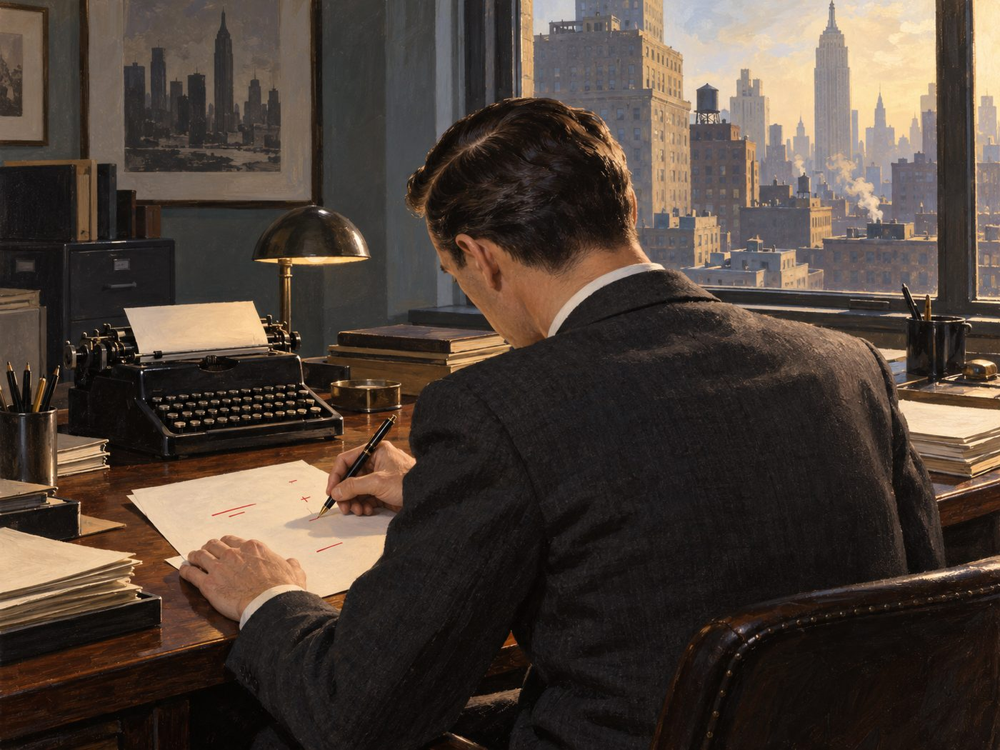

광고·마케팅 업계 뉴스 · 발행인 SM C&C 윤석진
사실 한 줄로 설득한, 현대 광고의 아버지

독자 여러분, 오늘은 '현대 광고의 아버지'로 불리는 데이비드 오길비를 소개합니다. 영국에서 태어나 요리사, 방문판매원, 여론조사원을 거친 그는 1948년 뉴욕에서 훗날 오길비 앤 매더가 되는 광고회사를 세웠습니다. 한쪽 눈에 안대를 한 신사를 내세운 해서웨이 셔츠 광고(1951)는 사진 한 장에 이야기를 심는 법을 보여 줬고, 롤스로이스 광고(1958)는 시계 소리까지 들릴 만큼 조용하다는 긴 헤드라인으로 사실이 가장 강한 설득이라는 걸 증명했지요. 그는 소비자를 바보가 아니라 '당신의 아내'처럼 대하라고 했고, 조사와 데이터를 중시하면서도 '빅 아이디어'를 강조했습니다. 1963년 『어느 광고인의 고백』과 1983년 『오길비의 광고』는 지금도 신입 광고인의 필독서로 꼽힙니다. 1999년 세상을 떠났지만, 헤드라인과 카피를 대하는 그의 원칙은 숏폼 시대에도 여전히 유효합니다.